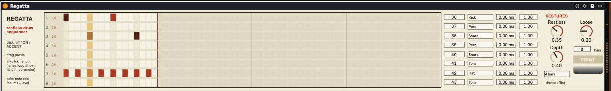

24
regatta
A drum sequencer where the grid is a seed, not the score — a restless Copeland-style drummer performs your beat in an endless, never-repeating MIDI stream.

about
You program a small base beat; Regatta plays it the way a restless, easily-bored drummer would. A gesture engine — coherent musical units, never per-step dice — adds ghosts, drags, doublings, drops and hat flourishes, all role-aware and anchored to your seed; fills build into phrase ends and land on the one; the pattern itself modulates for a phrase or two (hats go offbeat or onto the ride, accents migrate, kicks push late) before coming home; lanes occasionally slip off-grid and get pulled back in; and a slow ~30-bar contour breathes the whole performance between near-straight and busy. Sits before a Drum Rack, generates for ever, and PRINT nets the last N bars — exactly as played — into a Session clip.
- type
- midi effect
- built by
- claude
- state
- working
- folder
- Regatta Device
quick start
- 01Drop
Regatta.amxdon a MIDI track before a Drum Rack. - 02Draw a seed: click cells (off → ON → ACCENT), drag to paint, alt-click sets a lane's length — lanes loop at their own length, so polymetre is free. A starter kick/snare/hat beat ships in.
- 03Set each lane's Role to match its drum — gestures read it (snares get ghosts and drags, hats get flourishes). Give one lane Ride so the hat-to-ride modulation has somewhere to go.
- 04Play, then raise Restless and Depth until the drummer feels right. Add Loose for human timing.
- 05Heard a keeper? PRINT drops the last N bars into this track's first empty Session slot, unquantised, as played.
controls
per lane (grid rows 1-8)
- Note0 - 127
- MIDI note the lane fires; defaults 36-43, the Drum Rack's bottom two rows.
- RoleKick / Snare / Hat / Ride / Tom / Perc
- What kind of drum this lane is. Steers every gesture, fill and modulation — set it honestly.
- Feel-100 - +100 ms
- Push/drag against the grid: negative plays ahead (eager hats), positive behind (lazy backbeat).
- Level0 - 1
- Velocity trim (a trim, not a mute — velocity floors at 1).
gestures
- Restless0 - 1
- How often the drummer intervenes. 0 = plays the seed dead straight; past ~0.55 a second ornament stream opens; 1 is properly busy.
- Depth0 - 1
- How far interventions go: ghosts and doublings at low settings, then drags and drops, then flourishes with 64th flavours. Also scales gesture velocities and fill length.
- PhraseOff / 2 / 4 / 8 / 16 bars
- Where fills land. Off = no fills at all; phrase weighting and pattern modulation carry on regardless.
- Loose0 - 1
- Timing master: human jitter on every hit (±6 ms at full, one sample per lane-step so a hand moves as a unit) and the licence for phase excursions. 0 = machine-tight.
- Print Bars + PRINT1 - 32
- Captures the last N complete bars of the performance into a fresh Session clip on this track (new scene if the column's full). Refuses politely when stopped.
push 3
encoders read left to right. slots marked “–” are intentionally empty.
lanes never straddle banks — two lanes per bank, in order, through Lanes34, Lanes56 and Lanes78
Print is momentary — fires a print and resets itself
workflow
the long take
Restless ~0.4, Depth ~0.5, Loose ~0.3, Phrase 4 bars — then record 8+ minutes into Arrangement, or just play. The contour gives near-straight stretches and busy patches on its own; harvest the best bars with PRINT afterwards.
the drummer, not the machine
Keep the seed simple — kick, backbeat, 8th hats. The interest comes from what Regatta does to it, and simple seeds give the gestures the most room to read the beat.
printing keepers
Leave it running while you work on other tracks. When a fill or a modulated stretch grabs you, PRINT 8 bars, mute the device and keep the clip — it is exactly what you heard, off-grid timing included. Live's Capture MIDI works too.
gotchas
- Restless 0 really is off: no gestures, fills, modulations or excursions. If the device seems inert, look there first.
- PRINT needs the transport running and at least one complete bar played; it prints complete bars only.
- Mute the device (or the clip) after printing if both would play — otherwise everything doubles.
- The drop gate means a hat lane can go quiet during fills and thin-8s episodes by design — that's the drummer making room, not a bug.
- MIDI timing is vector-quantised like every M4L MIDI device (~1.5 ms at a 64-sample buffer).
rebuilding
python3 build_regatta.py in Regatta Device/ regenerates the .amxd (with full wiring validation) — frozen at build, all three js files embedded and byte-verified, so there is no Max freeze step. Offline suites: sim_engine.py, sim_sched.py (clock + scheduler maths) and test_grid_node.js, test_brain_node.js, test_print_node.js (the REAL js under node, LiveAPI stubbed).
All taste numbers — gesture rates, fill shapes, episode probabilities — live in regatta_brain.js.